Calibrate
Calibration
Never blindly trust a glucose sensor: regularly verify the readings with a blood test.
A flat line (same number) is never a good sign.
General considerations⌁
Calibration is key to CGM mesurement accuracy. Always use a trusted glucometer and make sure you put yourself in the best conditions to have the most accurate blood reading when calibrating.
Some of the most important prerequisites are:
- Stable BG. Never calibrate when BG is rising or falling rapidly.
- In range (important for Libre initial calibration). Try to perform your calibrations when BG is within normal range (80-180 mg/dl or 5-10 mmol/l).
- Don't overcalibrate. Better few accurate than too many: you will most probably confuse xDrip+. For G6, G7, 1, 1+ use the vendor recommendations.
Native and xDrip+ algorithms⌁
xDrip+ can provide its own calibrations algorithms for sensors sending raw data.
G6, G7, 1, 1+ native calibration means that xDrip+ will not use its algorithm but will send calibration values to the transmitter and let it handle it with its own proprietary algorithm.
Libre 1, 14 Days, Pro, 2 (EU) and 2+ (EU) sensors only send raw data, and will need either xDrip+ calibration or an external calibration plugin called out of process algorithm (short OOP).
Libre 2 patched app will use its own proprietary algorithm (an old version though).
| Sensor | xDrip+ calibration | Native calibration |
|---|---|---|
| G6 rebatteried | Available | Available |
| G6, G7, 1, 1+ | Not available | Mandatory |
| Libre 1 | Mandatory | OOP1 (obsolete) |
| Libre 2 EU patched app | Limited offset (see below) | By design |
| Libre 2/2+ EU, Libre 14 days US | Optional | OOP2 |
Libre 2 patched app⌁
When using the patched app, you can calibrate but correction is applied as an offset with maximum values between -40 mg/dl to +20 mg/dL [-2,2 mmol/l to +1,1 mmol/l]. Calibrations failing this criteria will be ignored.
xDrip+ calibration settings⌁
xDrip+ calibration only
The information below is relevant to xDrip+ calibration.
For G6/G7/1/1+ native mode see here.
Before calibrating check your settings.
One thing you want to enable is data tables in the main menu. This will really help understanding when things go wrong.
First calibration⌁
If your sensor requires calibrations, after connecting it to xDrip+ and receiving three values you should see this request:
Calibrate Sensor?
We have some readings!
Next, we need the first calibration blood test.
Ready to calibrate now?
NO CALIBRATE
Two values initial calibration values are historical from G4. If you want to use that correctly: make two different measurements (two strips), this is a recommended approach. If you usually insert the same value you might want to make it a default here.
☰ Initial calibration
Enter First BG Value
Enter Second BG Value
In order to get started, perform one or two finger prick tests and enter the values here!
If you're using native calibration, the value will be sent to the transmitter for processing.
If you're using xDrip+ calibration, this value will be processed 10 minutes later to make sure to compensate for all physiological and chemical delays of the CGM measurement, this is why it's extremely important to calibrate at stable BG.
Let's look graphically at what will happen on the main view:
- First reading (brought to calibration value)
- Second reading (brought to calibration value)
- Not visible yet but it's the third reading. The actual value when you calibrated
- Next reading in 5 minutes
- Next reading in 10 minutes and the calibration point (that will be used in 10 minutes)
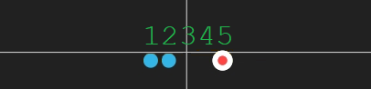
If your BG remained stable during this time you should see it go through the calibration point.
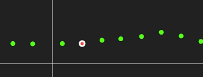
Looking into your calibration data table you will see new entries corresponding to raw BG measurements used to define define the calibration:
- This is the value you entered (converted if necessary in mg/dl)
- Same value but in the unit you use with xDrip+ (here in mg/dl but will show also in mmol/l)
- Raw BG from the sensor
- Calculated slope and intercept
- Effective calibration date and time (that is actual + 10 minutes) and corresponding raw BG date and time
- There are two sets of raw data measurement for one calibration one lower one higher
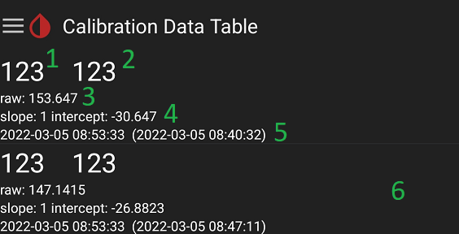
Your calibration graph it will now be someting like this.
Depending on the difference between blood samples and the variability of current BG, slope might not be exactly 1.
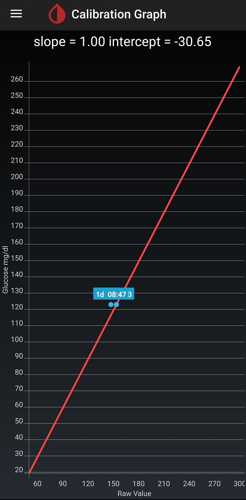
Successive calibrations⌁
For safety reasons you will check regularly your real BG value, at least once per day because you can't trust blindly a sensor. Enter these blood tests as treatments.
In order to have BG values that are not varying too rapidly, you shouldn't calibrate when you have carbs or insulin active at that time.
Frequency
Unless expressly required by your sensor do not calibrate systematically when performing a blood test.
For Libre sensors, do not necessarily calibrate if difference is less than 15%.
Don't overcalibrate, you can perform as many blood checks as you want, enter them as treatments in xDrip+ but add calibrations with extra care.
On your calibration graph you will see active calibration points in blue and old or invalid ones in grey.
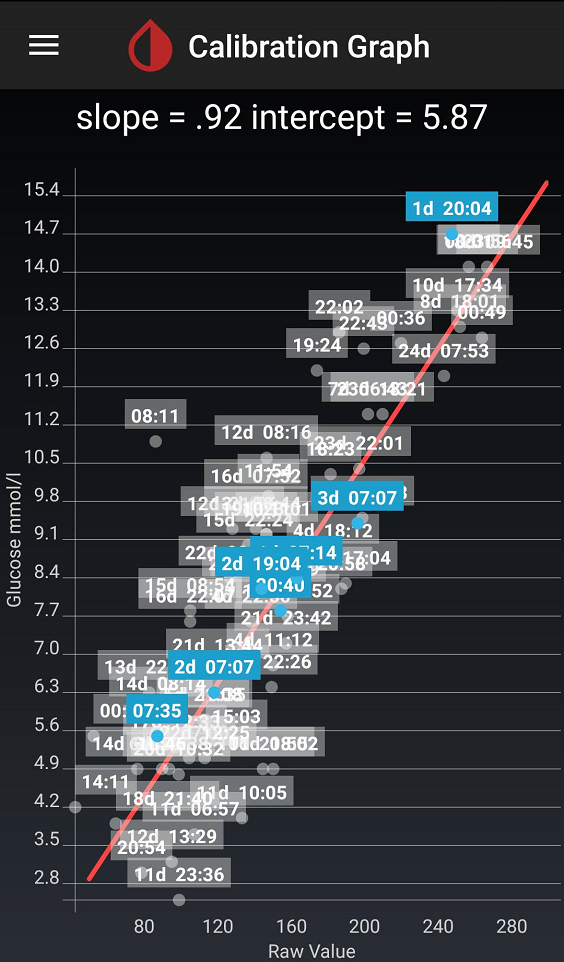
If you see, at stable BG, comparing xDrip+ value 10 minutes after your blood test, that the value differs too much, you will add another calibration point.
Since BG trends often are difficult to forecast, you can use a trick:
- Check Use Treatment BG Values is not set to Never Use Them in Advanced Calibrations.
- Enter your blood test as a treatment.
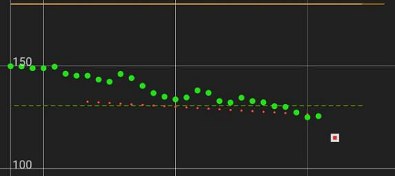
- Wait 10 minutes and decide if it would have been a good time to calibrate (stable enough).
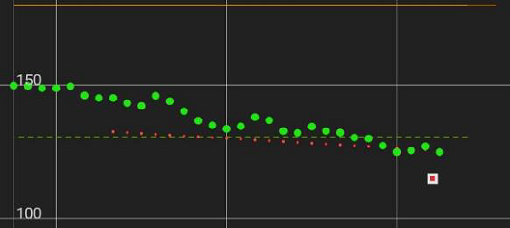
- If it was, touch your treatment (the new BG test read and white square dot on the graph) and make it a calibration.
Blood Test Action
What would you like to do?
NOTHING DELETE CALIBRATE
You now have another calibration point.
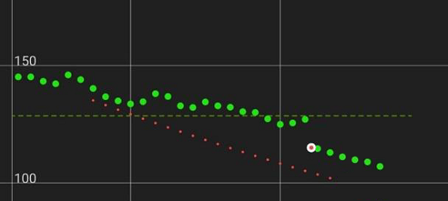
Disable a calibration⌁
It might happen that a calibration point is clearly bad and you want to delete it.
Open the Calibration Data Table and long touch the calibration you want to disable.
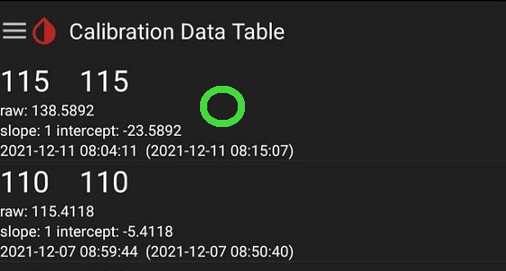
Disable this calibration?
Flagged calibrations will no longer have an effect.
NO YES
It will show in red and will not be used for calculation anymore.
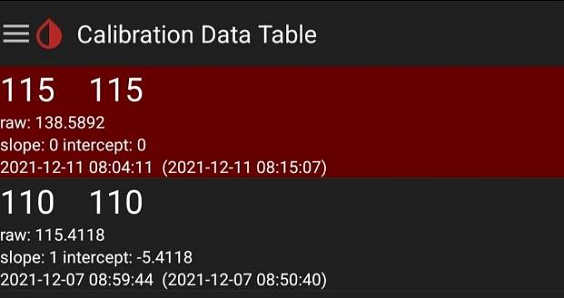
Reset all calibrations⌁
This method only applies to sensors supporting xDrip+ calibration.
Do not use it for native calibration only sensors (G6 new, G7, 1, 1+ etc.)-
The fastest way to restart calibration from scratch (Initial Calibration) when it becomes clear that the current ones are wrong, or if you don't have data after calibrating is to reset all calibrations.
From the main menu, Stop Sensor.
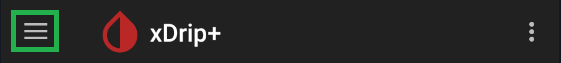
Stop Sensor
Do not stop sensor: only reset all calibrations.
Stop Sensor
Only stop your sensor when you actually plan to remove it, otherwise leave it running!
DON'T STOP, JUST RESET ALL CALIBRATIONS
Are you sure?
Do you want to delete and reset the calibrations for this sensor?
NO YES
xDrip+ will bring you back to initial calibration. Make sure you perform this action at stable BG, when in range.